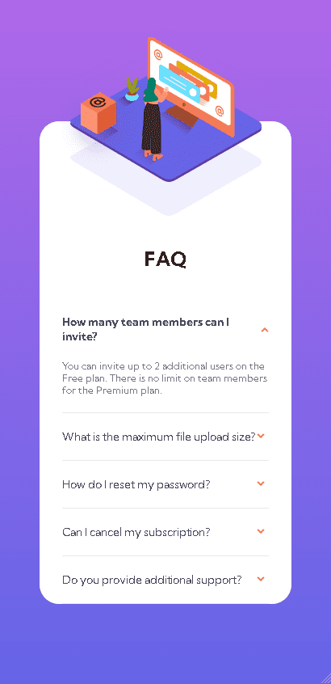

FAQ Accordion
Este ejercicio trata de una seccion de preguntas frecuentes, cuando se oprime la flecha en la parte derecha de la pregunta se despliega la respuesta.Realice este desarrollo con 2 breakpoints, uno para pc y uno para celular. A continuación presento como quedo el desarrollo del maquetado para pc:

Cuando se oprime la flecha para desplegar la pregunta quedaria asi el diseño:

Y este seria el diseño para celular:
